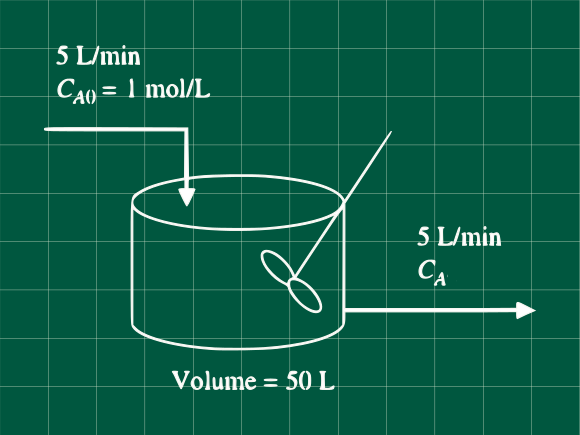

Problema 5.16 (Process Systems Analysis and Control - Coughanowr, LeBlanc)

Para el reactor de mezcla completa mostrada en la figura, determine la función de transferencia que relaciona la concentración de salida con la concentración de la alimentación. Si cambiamos la concentración de entrada de 1 a 2 mol/L, ¿Cuál es la nueva concentración de salida? y ¿Cuál es la concentración en el nuevo estado estacionario?
Nuestros datos
k=mol⋅min2⋅L
Reacción
2A⇒B
−rA=kCA2
Resolviendo
Linealicemos el término cuadrático antes. Usando la serie de Taylor truncada a primer orden
f(x)=f(xs)+dxdf∣∣∣∣∣x=xs(x−xs)
Siendo nuestra función a linealizar f(CA)=CA2
CA2=CAs2+2⋅CAs(CA−CAas)
CA2−CAs2=2⋅CAs(CA−CAas)... (1)
Escribiendo nuestro balance de materia, sabiendo que no=C0V
CA0F−CAF−kCA2V=dtdno=dtd(CAV)
CA0F−CAF−kCA2V=Vdtd(CA)... (2)
Realizando el balance en estado estacionario
CA0sF−CAsF−kCAs2V=0... (3)
Restado (3) de (2). Recuerde que d(CA)=d(CA−CAs)
Para simplificar el manejo de la ecuación (4) necesitamos reemplazar datos, pero nos falta conocer un dato CAs, para hallar utilizamos la ecuación (3), conociendo que: k=2;CA0s=1;V=50 y F=5
5×1−5×CAs−2×50×CAs2=0
1−CAs−20×CAs2=0
Usando la formula cuadrática para resolver CAs y sólo tomando en cuenta el valor positivo
CAs=2×20−1±1+4×20
CAs=40−1+9
CAs=0.2
Reemplazando en la ecuación (4)
5CA0′(s)−5CA′(s)−2×0.2×2×50×CA′(s)=50×sCA′(s)
CA0′(s)−9CA′(s)=10sCA′(s)
CA0′(s)CA′(s)=10s+91... (5)
Describiendo la perturbación
CA0′(t)=CA0−CA0s={1−12−1mol/Lsi t<0si t>0
CA0′(t)={01mol/Lsi t<0si t>0
CA0′(t)=1u(t)
Entonces su transforma da de Laplace es
CA0′(s)=s1
Reemplazando en la ecuación (5)
CA′(s)=CA0′10s+91
CA′(s)=s(10s+9)1
Reordenando para obtener la antitransformada (Recuerde que tambien puede obtener la antitransformada directamente de tablas)
CA′(s)=9s(10s+9)9=9s(10s+9)9+10s−10s
CA′(s)=9s(10s+9)9+10s−9s(10s+9)10s
CA′(s)=9s1−9(10s+9)10
CA′(s)=9s1−9(s+9/10)1
Antitransformando
CA′(t)=91−91e−9t/10
Hallando la concentración cuando t = 1 min
CA(t=1)=CA′(t=1)+CAs
CA(t=1)=91(1−e−9/10)+0.2
CA(t=1 min)=0.2659 mol/L
Para hallar la nueva concentración en el estado estacionario hacemos que el tiempo tienda a infinito (t→∞)
CA(t→∞)=t→∞lim(91(1−e−9t/10)+0.2)
CA(t→∞)= 0.3111 mol/L
Referencias
Coughanowr, D. R.; LeBlanc, S. E. (2009). Process Systems Analysis and Control (3rd edition). McGraw-Hill. ISBN 978-0-07-339789-4.